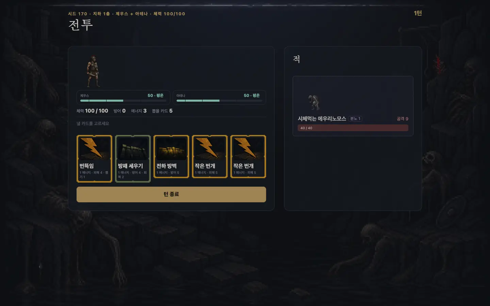

코드·콘텐츠·밸런스·그림·음악·음성 전부를 AI가 만들었다. 그래서 실제 설계 대상은 게임이 아니라 AI 산출물이 거짓말을 못 하게 만드는 검증 구조였다.
Overview
숫자로 보는 엿새
6일기획→배포 전 과정
85건plan 소비 = 리뷰 문서
125건CodeRabbit 지적 PR 14개
204개테스트 승률 게이트 포함
64,000봇 시뮬 런 6회차
448줄신 대사 음성 로컬 TTS
두 신을 후원자로 모시고 12층을 오르는 덱빌딩 로그라이크. 카드 179 · 은혜 45 · 적 19 · 신 5(조합 10) — 이 콘텐츠 전부가 아래 파이프라인의 산출물이다. 플레이: bongseop-kim.github.io/god-scales
Agenda
문서 지도 — 각 장이 “생성 → 검증” 한 쌍이다
01
개발 워크플로
계획을 커밋하고, 실측을 남기고, 계획을 지운다
02
지시 규범
상시 지시는 여섯 줄, 규범은 파일 두 벌
03
AI 상호 리뷰
작성 AI와 검토 AI가 서로를 잡는다
04
콘텐츠 파이프라인
게이트를 통과해야만 게임에 들어간다
05
브라우저 E2E
사람이 눈으로 하던 확인을 AI가 한다
06
밸런스 게이트
지표는 하나, AI가 지표를 속이지 못하게
07
집계 리포트
층화 2,000런이 게임과 함께 배포된다
08
아트 파이프라인
프롬프트가 코드고, 실패담도 문서다
09
대사 음성
검증 둘이 생성보다 먼저 섰다
10
런타임 청정 · 출처
플레이 중 LLM 호출 0회
Overview
여덟 영역 — 만든 것은 AI, 지킨 것은 게이트
영역
도구
검증 방법
코드 · 기획
Claude Code, GPT
테스트 204개 + 작업마다 실측 리뷰 문서 85건
코드 리뷰
CodeRabbit
PR 14개 · 인라인 지적 125건 — 작성 AI와 검토 AI 분리
게임 콘텐츠
LLM 대량 생성 (프롬프트 13종)
validate.ts 반려 코드 9종 — 통과분만 data/ 진입
밸런스
룰 봇 수만 런 + LLM 에이전트
조합 승률 하한 0.05를 테스트에 잠금
브라우저 E2E · 시각
aside (브라우저 조종 에이전트)
12층 완주 자동 플레이 → 반출 JSON ↔ CLI 재생 대조
이미지 90+장
sprite-gen + GPT-image
런마다 qa 접촉시트 + art --check 대조
BGM · 컷인 영상
Gemini
장당 상한 · 무게 게이트
대사 음성 448줄
Qwen3-TTS 1.7B (완전 로컬)
신별 스모크 + 파이썬↔TS 해시 패리티 테스트
배포물에는 LLM 호출이 0회 — AI는 전부 빌드타임에만 산다 (§10)
01
Workflow
계획을 커밋하고, 실측을 남기고, 계획을 지운다
plan
완료 정의 선기록
→
수행
게이트·테스트 반려
→
commit
CodeRabbit 자동 리뷰
→
review
실측 기록 · plan 삭제
완료 정의를 측정 전에 적는다 — AI가 결과에 맞춰 목표를 다시 쓰는 것을 막는다
리뷰는 감상이 아니라 수치다 — 예: 에셋 배선(P-37) 번들 무게 681.50MiB → 2.39MiB
리뷰 문서는 다음 plan의 입력 — reviews/00-index.md의 행 하나가 작업 하나. 인덱스만 읽어도 엿새가 재구성된다
01
Workflow
사흘 사이 — plan 41개의 실물

8/6 (P-37) — 패널 상자에 텍스트 버튼. 에셋을 막 붙인 시점.
8/9 (P-78) — 같은 화면. 무대·의도·토큰·개입·발화가 붙었다. 사이 41개 plan이 전부 리뷰 문서로 남아 있다.
02
Rules
상시 지시는 여섯 줄, 규범은 파일 두 벌
커밋·푸시·PR 금지. 사용자가 그 턴에 시킬 때만.
`plans/NN-*.md` 수행이 끝나면 `reviews/NN-*.md`에 리뷰를 남기고 해당 plan 파일을 삭제한다.
밸런스 게이트는 조합 승률 하한 하나. 새 지표·밴드·회차 비교를 만들지 않고,
통과 못 하는 값을 테스트에 넣지도 깎지도 않는다.
브라우저 확인·E2E는 `aside` CLI로만 한다.
게임에 들어가는 한글 텍스트(대사·카드·요구·UI)를 쓰거나 고칠 때는 `WRITING.md`를 먼저 읽고 따른다.
UI·레이아웃·애니메이션을 만들거나 고칠 때는 `UI.md`를 먼저 읽고 따른다.
CLAUDE.md 전문 — 긴 규칙집은 AI가 안 읽는다. 헌법 여섯 줄만 상시로 준다.
WRITING.md
신별 문체를 종결어미 단위로 잠근다 — “대사에서 이름을 지워도 어미만으로 누군지 알 수 있어야 한다.” 아테나만 존댓말, 요구 수치는 한글 수사만.
UI.md
「레이아웃은 움직이지 않는다」 — 조건부 컴포넌트는 자리를 남긴다 · 애니메이션은 transform·opacity만.
02
Rules
도구 철학 — 써 보고, 재고, 뺐다
배제
멀티에이전트 하네스(OMC, Superpowers 류)를 실제로 써 본 뒤 근거를 갖고 배제
모델이 발달하며 토큰 과소비 · 간단한 해결의 우회 경향을 확인
채택
최소주의 스킬 ponytail 하나 · 각 도구의 네이티브 기능 · plan별 reasoning effort 조절
도구를 늘리는 대신 검증 게이트를 늘리는 쪽에 걸었다
03
Cross Review
작성 AI와 검토 AI가 서로를 잡는다
coderabbitai[bot] · PR #11 · reviews/00-index.md
🟠 MajorRestore the bundle size gate before marking P-57 as passed. — 4.42MiB > 4MiB 상한. 리뷰 문서가 “초과는 이 작업 전부터”라고 넘어가려던 것을 잡았다. 대응은 은폐가 아니라 재측정 — 첫 화면 실측(988KiB)으로 상한이 재던 것이 틀렸음을 밝히고 근거와 함께 상한을 옮겼다.
우호도 변화 분포 — 가운데(카드·감쇠 드리프트)와 바깥(±12 과업 보상·비용)이 갈라진 이봉 분포. “저울”이 실제로 양극으로 움직인다는 증거
판정·밴드 없는 순수 리포트 — 게이트는 §6의 하나뿐이라는 원칙이 여기서도 유지된다. bongseop-kim.github.io/god-scales/stats.html
08
Art Pipeline
프롬프트가 코드고, 실패담도 문서다
① 생성 원본
크로마키째 보존 · 요청 JSON과 프롬프트가 같은 폴더에
→
② 프레임 분해
idle 4 · attack 2 · hit · death
→
③ qa 접촉시트
실물 보고 반려 · qa-notes.md · palette.lock.json
→
④ 배포 스트립
art --check 대조 · 위반 0
실패담 — 해상도 소실 사고: 문서의 「규격 480×300」(화면 표시 크기)이 파일 크기 지시로 읽혀 -resize가 생성 원본을 깎았다. 재발 방지 규칙 넷을 art/README.md에 문서화 — 원본 무축소 · 파일/화면 숫자 표기 분리 · 변환 입출력 경로 분리 · 원본은 _src/에
09
Voice
검증 둘이 생성보다 먼저 섰다
gods.json
대사 448줄
→
tools/tts.py
Qwen3-TTS 1.7B · 신별 화자·톤
→
{해시}.m4a
FNV-1a · 증분 재생성
→
speak()
호출부 7곳
① 스모크 테스트
본 생성 전 신별 1줄만 뽑아 억양을 귀로 확인. 어색한 신만 VoiceDesign 모델로 폴백. 화자는 WRITING.md 성격 표 기반 — 제우스 노련한 저음, 아테나만 존댓말, 아르테미스는 한국어 네이티브.
② 해시 패리티 테스트
텍스트가 바뀌면 파일명이 바뀌어 매니페스트 없이 증분 재생성. 파이썬(생성)과 TypeScript(재생)가 같은 해시를 내는지 vitest가 고정값으로 잠근다(test/tts.test.ts). 어긋나면 침묵이 아니라 테스트 실패로 드러난다.
BGM 2곡 · 컷인 영상 5개는 Gemini — 장당 상한·무게 게이트. API 비용 0.
10
Runtime
플레이 중 LLM 호출 0회 — grep 게이트로 지킨다
빌드타임
콘텐츠 생성 · 검증·튜닝 · 아트·음성
→
dist/
정적 JS·JSON · 이미지·오디오
→
런타임
LLM 호출 0회 · API 키 없음 · 네트워크 의존 없음
grep -rE "sk-ant|ANTHROPIC_API_KEY|OPENAI|api_key" dist/ # 결과 없음
grep -rlE "\bvalidate\b|\btune\b" dist/ # 결과 없음
localStorage·쿠키도 없다. 런은 seed + 결정열 JSON으로 반출되고 그 파일 하나로 CLI가 완전 복원한다 — §5의 E2E가 이 대칭 위에 서 있다.